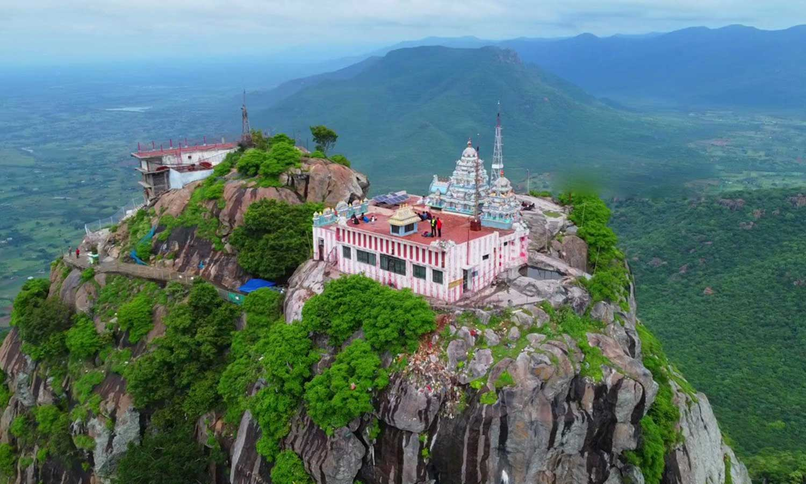

THIRUVANNAMALAI
Parvathamalai

Parvathamalai is a sacred hill in the Tiruvannamalai district of Tamil Nadu, known for a challenging trek and a Shiva temple at the summit. The trek is rugged, taking 3-4 hours with steep paths that include iron rods, chains, and ladders for assistance. The mountain is considered spiritually significant, with legends linking it to a falling fragment of the Sanjeevini hill and a 2000-year-old temple dedicated to Lord Shiva